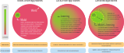
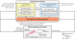
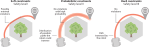
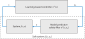
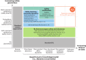

<!DOCTYPE html>


<html lang="en" data-content_root="../" >

  <head>
    <meta charset="utf-8" />
    <meta name="viewport" content="width=device-width, initial-scale=1.0" /><meta name="viewport" content="width=device-width, initial-scale=1" />

    <title>Safe Learning in Robotics &#8212; Machine Learning Control Training</title>
  
  
  
  <script data-cfasync="false">
    document.documentElement.dataset.mode = localStorage.getItem("mode") || "";
    document.documentElement.dataset.theme = localStorage.getItem("theme") || "light";
  </script>
  
  <!-- Loaded before other Sphinx assets -->
  <link href="../_static/styles/theme.css?digest=8d27b9dea8ad943066ae" rel="stylesheet" />
<link href="../_static/styles/bootstrap.css?digest=8d27b9dea8ad943066ae" rel="stylesheet" />
<link href="../_static/styles/pydata-sphinx-theme.css?digest=8d27b9dea8ad943066ae" rel="stylesheet" />

  
  <link href="../_static/vendor/fontawesome/6.5.1/css/all.min.css?digest=8d27b9dea8ad943066ae" rel="stylesheet" />
  <link rel="preload" as="font" type="font/woff2" crossorigin href="../_static/vendor/fontawesome/6.5.1/webfonts/fa-solid-900.woff2" />
<link rel="preload" as="font" type="font/woff2" crossorigin href="../_static/vendor/fontawesome/6.5.1/webfonts/fa-brands-400.woff2" />
<link rel="preload" as="font" type="font/woff2" crossorigin href="../_static/vendor/fontawesome/6.5.1/webfonts/fa-regular-400.woff2" />

    <link rel="stylesheet" type="text/css" href="../_static/pygments.css?v=fa44fd50" />
    <link rel="stylesheet" type="text/css" href="../_static/styles/sphinx-book-theme.css?v=384b581d" />
    <link rel="stylesheet" type="text/css" href="../_static/togglebutton.css?v=13237357" />
    <link rel="stylesheet" type="text/css" href="../_static/copybutton.css?v=76b2166b" />
    <link rel="stylesheet" type="text/css" href="../_static/mystnb.4510f1fc1dee50b3e5859aac5469c37c29e427902b24a333a5f9fcb2f0b3ac41.css" />
    <link rel="stylesheet" type="text/css" href="../_static/sphinx-thebe.css?v=4fa983c6" />
    <link rel="stylesheet" type="text/css" href="../_static/exercise.css" />
    <link rel="stylesheet" type="text/css" href="../_static/design-style.1e8bd061cd6da7fc9cf755528e8ffc24.min.css?v=0a3b3ea7" />
  
  <!-- Pre-loaded scripts that we'll load fully later -->
  <link rel="preload" as="script" href="../_static/scripts/bootstrap.js?digest=8d27b9dea8ad943066ae" />
<link rel="preload" as="script" href="../_static/scripts/pydata-sphinx-theme.js?digest=8d27b9dea8ad943066ae" />
  <script src="../_static/vendor/fontawesome/6.5.1/js/all.min.js?digest=8d27b9dea8ad943066ae"></script>

    <script src="../_static/documentation_options.js?v=9eb32ce0"></script>
    <script src="../_static/doctools.js?v=9a2dae69"></script>
    <script src="../_static/sphinx_highlight.js?v=dc90522c"></script>
    <script src="../_static/clipboard.min.js?v=a7894cd8"></script>
    <script src="../_static/copybutton.js?v=f281be69"></script>
    <script src="../_static/scripts/sphinx-book-theme.js?v=efea14e4"></script>
    <script>let toggleHintShow = 'Click to show';</script>
    <script>let toggleHintHide = 'Click to hide';</script>
    <script>let toggleOpenOnPrint = 'true';</script>
    <script src="../_static/togglebutton.js?v=4a39c7ea"></script>
    <script>var togglebuttonSelector = '.toggle, .admonition.dropdown';</script>
    <script src="../_static/design-tabs.js?v=36754332"></script>
    <script>const THEBE_JS_URL = "https://unpkg.com/thebe@0.8.2/lib/index.js"; const thebe_selector = ".thebe,.cell"; const thebe_selector_input = "pre"; const thebe_selector_output = ".output, .cell_output"</script>
    <script async="async" src="../_static/sphinx-thebe.js?v=c100c467"></script>
    <script>var togglebuttonSelector = '.toggle, .admonition.dropdown';</script>
    <script>const THEBE_JS_URL = "https://unpkg.com/thebe@0.8.2/lib/index.js"; const thebe_selector = ".thebe,.cell"; const thebe_selector_input = "pre"; const thebe_selector_output = ".output, .cell_output"</script>
    <script>window.MathJax = {"loader": {"load": ["[tex]/configmacros"]}, "tex": {"packages": {"[+]": ["configmacros"]}, "macros": {"vect": ["{\\mathbf{\\boldsymbol{#1}} }", 1], "E": "{\\mathbb{E}}", "P": "{\\mathbb{P}}", "R": "{\\mathbb{R}}", "abs": ["{\\left| #1 \\right|}", 1], "simpl": ["{\\Delta^{#1} }", 1], "amax": "{\\text{argmax}}"}}, "options": {"processHtmlClass": "tex2jax_process|mathjax_process|math|output_area"}}</script>
    <script defer="defer" src="https://cdn.jsdelivr.net/npm/mathjax@3/es5/tex-mml-chtml.js"></script>
    <script>DOCUMENTATION_OPTIONS.pagename = 'notebooks/nb_80_safe_learning_control';</script>
    <link rel="index" title="Index" href="../genindex.html" />
    <link rel="search" title="Search" href="../search.html" />
    <link rel="next" title="Practice" href="nb_90_practice.html" />
    <link rel="prev" title="Machine Learning &amp; Control" href="nb_70_machine_learning_control.html" />
  <meta name="viewport" content="width=device-width, initial-scale=1"/>
  <meta name="docsearch:language" content="en"/>
  </head>
  
  
  <body data-bs-spy="scroll" data-bs-target=".bd-toc-nav" data-offset="180" data-bs-root-margin="0px 0px -60%" data-default-mode="">

  
  
  <a id="pst-skip-link" class="skip-link" href="#main-content">Skip to main content</a>
  
  <div id="pst-scroll-pixel-helper"></div>
  
  <button type="button" class="btn rounded-pill" id="pst-back-to-top">
    <i class="fa-solid fa-arrow-up"></i>
    Back to top
  </button>

  
  <input type="checkbox"
          class="sidebar-toggle"
          name="__primary"
          id="__primary"/>
  <label class="overlay overlay-primary" for="__primary"></label>
  
  <input type="checkbox"
          class="sidebar-toggle"
          name="__secondary"
          id="__secondary"/>
  <label class="overlay overlay-secondary" for="__secondary"></label>
  
  <div class="search-button__wrapper">
    <div class="search-button__overlay"></div>
    <div class="search-button__search-container">
<form class="bd-search d-flex align-items-center"
      action="../search.html"
      method="get">
  <i class="fa-solid fa-magnifying-glass"></i>
  <input type="search"
         class="form-control"
         name="q"
         id="search-input"
         placeholder="Search..."
         aria-label="Search..."
         autocomplete="off"
         autocorrect="off"
         autocapitalize="off"
         spellcheck="false"/>
  <span class="search-button__kbd-shortcut"><kbd class="kbd-shortcut__modifier">Ctrl</kbd>+<kbd>K</kbd></span>
</form></div>
  </div>
  
    <header class="bd-header navbar navbar-expand-lg bd-navbar">
    </header>
  

  <div class="bd-container">
    <div class="bd-container__inner bd-page-width">
      
      
      
      <div class="bd-sidebar-primary bd-sidebar">
        

  
  <div class="sidebar-header-items sidebar-primary__section">
    
    
    
    
  </div>
  
    <div class="sidebar-primary-items__start sidebar-primary__section">
        <div class="sidebar-primary-item">

  

<a class="navbar-brand logo" href="home.html">
  
  
  
  
  
    
    
      
    
    
    
    <script>document.write(``);</script>
  
  
</a></div>
        <div class="sidebar-primary-item">

 <script>
 document.write(`
   <button class="btn navbar-btn search-button-field search-button__button" title="Search" aria-label="Search" data-bs-placement="bottom" data-bs-toggle="tooltip">
    <i class="fa-solid fa-magnifying-glass"></i>
    <span class="search-button__default-text">Search</span>
    <span class="search-button__kbd-shortcut"><kbd class="kbd-shortcut__modifier">Ctrl</kbd>+<kbd class="kbd-shortcut__modifier">K</kbd></span>
   </button>
 `);
 </script></div>
        <div class="sidebar-primary-item"><nav class="bd-links bd-docs-nav" aria-label="Main">
    <div class="bd-toc-item navbar-nav active">
        <p aria-level="2" class="caption" role="heading"><span class="caption-text">Notebook Pages</span></p>
<ul class="current nav bd-sidenav">
<li class="toctree-l1"><a class="reference internal" href="nb_10_introduction.html">Introduction</a></li>


<li class="toctree-l1"><a class="reference internal" href="nb_20_dynamic_programming.html">Dynamic Programming</a></li>
<li class="toctree-l1"><a class="reference internal" href="nb_30_systems.html">Systems</a></li>
<li class="toctree-l1"><a class="reference internal" href="nb_40_LQR.html">Linear Quadratic Regulator</a></li>


<li class="toctree-l1"><a class="reference internal" href="nb_50_MPC.html">Model Predictive Control</a></li>

<li class="toctree-l1"><a class="reference internal" href="nb_60_MCTS.html">MPC and AlphaZero</a></li>
<li class="toctree-l1"><a class="reference internal" href="nb_70_machine_learning_control.html">Machine Learning &amp; Control</a></li>


<li class="toctree-l1 current active"><a class="current reference internal" href="#">Safe Learning in Robotics</a></li>

<li class="toctree-l1"><a class="reference internal" href="nb_90_practice.html">Practice</a></li>


</ul>
<p aria-level="2" class="caption" role="heading"><span class="caption-text">Code</span></p>
<ul class="nav bd-sidenav">
<li class="toctree-l1 has-children"><a class="reference internal" href="../apidocs/index.html">API Reference</a><input class="toctree-checkbox" id="toctree-checkbox-1" name="toctree-checkbox-1" type="checkbox"/><label class="toctree-toggle" for="toctree-checkbox-1"><i class="fa-solid fa-chevron-down"></i></label><ul>
<li class="toctree-l2 has-children"><a class="reference internal" href="../apidocs/training_ml_control/training_ml_control.html"><code class="xref py py-mod docutils literal notranslate"><span class="pre">training_ml_control</span></code></a><input class="toctree-checkbox" id="toctree-checkbox-2" name="toctree-checkbox-2" type="checkbox"/><label class="toctree-toggle" for="toctree-checkbox-2"><i class="fa-solid fa-chevron-down"></i></label><ul>
<li class="toctree-l3 has-children"><a class="reference internal" href="../apidocs/training_ml_control/training_ml_control.environments.html"><code class="xref py py-mod docutils literal notranslate"><span class="pre">training_ml_control.environments</span></code></a><input class="toctree-checkbox" id="toctree-checkbox-3" name="toctree-checkbox-3" type="checkbox"/><label class="toctree-toggle" for="toctree-checkbox-3"><i class="fa-solid fa-chevron-down"></i></label><ul>
<li class="toctree-l4"><a class="reference internal" href="../apidocs/training_ml_control/training_ml_control.environments.grid_world.html"><code class="xref py py-mod docutils literal notranslate"><span class="pre">training_ml_control.environments.grid_world</span></code></a></li>
<li class="toctree-l4"><a class="reference internal" href="../apidocs/training_ml_control/training_ml_control.environments.utils.html"><code class="xref py py-mod docutils literal notranslate"><span class="pre">training_ml_control.environments.utils</span></code></a></li>
<li class="toctree-l4"><a class="reference internal" href="../apidocs/training_ml_control/training_ml_control.environments.cart.html"><code class="xref py py-mod docutils literal notranslate"><span class="pre">training_ml_control.environments.cart</span></code></a></li>
<li class="toctree-l4"><a class="reference internal" href="../apidocs/training_ml_control/training_ml_control.environments.inverted_pendulum.html"><code class="xref py py-mod docutils literal notranslate"><span class="pre">training_ml_control.environments.inverted_pendulum</span></code></a></li>
</ul>
</li>
<li class="toctree-l3 has-children"><a class="reference internal" href="../apidocs/training_ml_control/training_ml_control.models.html"><code class="xref py py-mod docutils literal notranslate"><span class="pre">training_ml_control.models</span></code></a><input class="toctree-checkbox" id="toctree-checkbox-4" name="toctree-checkbox-4" type="checkbox"/><label class="toctree-toggle" for="toctree-checkbox-4"><i class="fa-solid fa-chevron-down"></i></label><ul>
<li class="toctree-l4"><a class="reference internal" href="../apidocs/training_ml_control/training_ml_control.models.models.html"><code class="xref py py-mod docutils literal notranslate"><span class="pre">training_ml_control.models.models</span></code></a></li>
<li class="toctree-l4"><a class="reference internal" href="../apidocs/training_ml_control/training_ml_control.models.sindy.html"><code class="xref py py-mod docutils literal notranslate"><span class="pre">training_ml_control.models.sindy</span></code></a></li>
<li class="toctree-l4"><a class="reference internal" href="../apidocs/training_ml_control/training_ml_control.models.dmd.html"><code class="xref py py-mod docutils literal notranslate"><span class="pre">training_ml_control.models.dmd</span></code></a></li>
</ul>
</li>
<li class="toctree-l3"><a class="reference internal" href="../apidocs/training_ml_control/training_ml_control.nb_utils.html"><code class="xref py py-mod docutils literal notranslate"><span class="pre">training_ml_control.nb_utils</span></code></a></li>
<li class="toctree-l3"><a class="reference internal" href="../apidocs/training_ml_control/training_ml_control.shortest_path_problem.html"><code class="xref py py-mod docutils literal notranslate"><span class="pre">training_ml_control.shortest_path_problem</span></code></a></li>
<li class="toctree-l3"><a class="reference internal" href="../apidocs/training_ml_control/training_ml_control.plots.html"><code class="xref py py-mod docutils literal notranslate"><span class="pre">training_ml_control.plots</span></code></a></li>
<li class="toctree-l3"><a class="reference internal" href="../apidocs/training_ml_control/training_ml_control.hyperopt.html"><code class="xref py py-mod docutils literal notranslate"><span class="pre">training_ml_control.hyperopt</span></code></a></li>
<li class="toctree-l3"><a class="reference internal" href="../apidocs/training_ml_control/training_ml_control.control.html"><code class="xref py py-mod docutils literal notranslate"><span class="pre">training_ml_control.control</span></code></a></li>
</ul>
</li>
</ul>
</li>
</ul>

    </div>
</nav></div>
    </div>
  
  
  <div class="sidebar-primary-items__end sidebar-primary__section">
  </div>
  
  <div id="rtd-footer-container"></div>


      </div>
      
      <main id="main-content" class="bd-main">
        
        

<div class="sbt-scroll-pixel-helper"></div>

          <div class="bd-content">
            <div class="bd-article-container">
              
              <div class="bd-header-article">
<div class="header-article-items header-article__inner">
  
    <div class="header-article-items__start">
      
        <div class="header-article-item"><label class="sidebar-toggle primary-toggle btn btn-sm" for="__primary" title="Toggle primary sidebar" data-bs-placement="bottom" data-bs-toggle="tooltip">
  <span class="fa-solid fa-bars"></span>
</label></div>
      
    </div>
  
  
    <div class="header-article-items__end">
      
        <div class="header-article-item">

<div class="article-header-buttons">


<div class="dropdown dropdown-download-buttons">
  <button class="btn dropdown-toggle" type="button" data-bs-toggle="dropdown" aria-expanded="false" aria-label="Download this page">
    <i class="fas fa-download"></i>
  </button>
  <ul class="dropdown-menu">
      
      
      
      <li><a href="../_sources/notebooks/nb_80_safe_learning_control.ipynb" target="_blank"
   class="btn btn-sm btn-download-source-button dropdown-item"
   title="Download source file"
   data-bs-placement="left" data-bs-toggle="tooltip"
>
  

<span class="btn__icon-container">
  <i class="fas fa-file"></i>
  </span>
<span class="btn__text-container">.ipynb</span>
</a>
</li>
      
      
      
      
      <li>
<button onclick="window.print()"
  class="btn btn-sm btn-download-pdf-button dropdown-item"
  title="Print to PDF"
  data-bs-placement="left" data-bs-toggle="tooltip"
>
  

<span class="btn__icon-container">
  <i class="fas fa-file-pdf"></i>
  </span>
<span class="btn__text-container">.pdf</span>
</button>
</li>
      
  </ul>
</div>


<button onclick="toggleFullScreen()"
  class="btn btn-sm btn-fullscreen-button"
  title="Fullscreen mode"
  data-bs-placement="bottom" data-bs-toggle="tooltip"
>
  

<span class="btn__icon-container">
  <i class="fas fa-expand"></i>
  </span>

</button>


<script>
document.write(`
  <button class="btn btn-sm navbar-btn theme-switch-button" title="light/dark" aria-label="light/dark" data-bs-placement="bottom" data-bs-toggle="tooltip">
    <span class="theme-switch nav-link" data-mode="light"><i class="fa-solid fa-sun fa-lg"></i></span>
    <span class="theme-switch nav-link" data-mode="dark"><i class="fa-solid fa-moon fa-lg"></i></span>
    <span class="theme-switch nav-link" data-mode="auto"><i class="fa-solid fa-circle-half-stroke fa-lg"></i></span>
  </button>
`);
</script>


<script>
document.write(`
  <button class="btn btn-sm navbar-btn search-button search-button__button" title="Search" aria-label="Search" data-bs-placement="bottom" data-bs-toggle="tooltip">
    <i class="fa-solid fa-magnifying-glass fa-lg"></i>
  </button>
`);
</script>
<label class="sidebar-toggle secondary-toggle btn btn-sm" for="__secondary"title="Toggle secondary sidebar" data-bs-placement="bottom" data-bs-toggle="tooltip">
    <span class="fa-solid fa-list"></span>
</label>
</div></div>
      
    </div>
  
</div>
</div>
              
              

<div id="jb-print-docs-body" class="onlyprint">
    <h1>Safe Learning in Robotics</h1>
    <!-- Table of contents -->
    <div id="print-main-content">
        <div id="jb-print-toc">
            
            <div>
                <h2> Contents </h2>
            </div>
            <nav aria-label="Page">
                <ul class="visible nav section-nav flex-column">
<li class="toc-h1 nav-item toc-entry"><a class="reference internal nav-link" href="#">Safe Learning in Robotics</a><ul class="visible nav section-nav flex-column">
<li class="toc-h2 nav-item toc-entry"><a class="reference internal nav-link" href="#safety-constraints">Safety Constraints</a><ul class="nav section-nav flex-column">
<li class="toc-h3 nav-item toc-entry"><a class="reference internal nav-link" href="#safety-level-iii-constraint-satisfaction-guaranteed">Safety level III: constraint satisfaction guaranteed.</a></li>
<li class="toc-h3 nav-item toc-entry"><a class="reference internal nav-link" href="#safety-level-ii-constraint-satisfaction-with-high-probability">Safety level II: constraint satisfaction with high probability.</a></li>
<li class="toc-h3 nav-item toc-entry"><a class="reference internal nav-link" href="#safety-level-i-constraint-satisfaction-encouraged">Safety level I: constraint satisfaction encouraged</a></li>
</ul>
</li>
</ul>
</li>
<li class="toc-h1 nav-item toc-entry"><a class="reference internal nav-link" href="#safe-learning-control-approaches">Safe Learning Control Approaches</a><ul class="visible nav section-nav flex-column">
<li class="toc-h2 nav-item toc-entry"><a class="reference internal nav-link" href="#learning-uncertain-dynamics-to-safely-improve-performance">Learning uncertain dynamics to safely improve performance</a></li>
<li class="toc-h2 nav-item toc-entry"><a class="reference internal nav-link" href="#encouraging-safety-and-robustness-in-rl">Encouraging safety and robustness in RL</a></li>
<li class="toc-h2 nav-item toc-entry"><a class="reference internal nav-link" href="#certifying-learning-based-control-under-dynamics-uncertainty">Certifying learning-based control under dynamics uncertainty</a><ul class="nav section-nav flex-column">
<li class="toc-h3 nav-item toc-entry"><a class="reference internal nav-link" href="#model-predictive-safety-filter">Model Predictive Safety Filter</a></li>
</ul>
</li>
</ul>
</li>
</ul>

            </nav>
        </div>
    </div>
</div>

              
                
<div id="searchbox"></div>
                <article class="bd-article">
                  
  <section class="tex2jax_ignore mathjax_ignore" id="safe-learning-in-robotics">
<h1>Safe Learning in Robotics<a class="headerlink" href="#safe-learning-in-robotics" title="Link to this heading">#</a></h1>
<ul class="simple">
<li><p>Robot learning aims to enable autonomous operation in complex, uncertain environments.</p></li>
<li><p>Challenges include partial knowledge of dynamics, sensors, and other agents.</p></li>
<li><p>Safety guarantees are crucial but difficult with partial knowledge.</p></li>
<li><p>Control theory uses models to provide guarantees.</p></li>
<li><p>Reinforcement learning is data-driven for adaptability but lacks guarantees.</p></li>
<li><p>Combining model- and data-driven approaches leverages their complementary strengths.</p></li>
</ul>
<ul class="simple">
<li><p>Key directions are:</p>
<ul>
<li><p>Robustness against worst-case scenarios.</p></li>
<li><p>Adaptation by learning from observations.</p></li>
<li><p>Leveraging models from domain knowledge and data.</p></li>
</ul>
</li>
<li><p>Control provides the basis for safety-critical applications.</p></li>
<li><p>Safe RL research has grown rapidly.</p></li>
<li><p>Simulation enables RL progress but transferring to real robots remains challenging.</p></li>
</ul>
<figure class="align-default" id="id6">
<a class="reference internal image-reference" href="../_images/80_comparison_model_driven_data_driven.svg"></a>
<figcaption>
<p><span class="caption-number">Fig. 24 </span><span class="caption-text">A comparison of model-driven, data-driven, and combined approaches. <em>Taken from <span id="id1">[<a class="reference internal" href="home.html#id5" title="Lukas Brunke, Melissa Greeff, Adam W. Hall, Zhaocong Yuan, Siqi Zhou, Jacopo Panerati, and Angela P. Schoellig. Safe Learning in Robotics: From Learning-Based Control to Safe Reinforcement Learning. Annual Review of Control, Robotics, and Autonomous Systems, 5(1):411–444, May 2022. doi:10.1146/annurev-control-042920-020211.">BGH+22</a>]</span></em>.</span><a class="headerlink" href="#id6" title="Link to this image">#</a></p>
</figcaption>
</figure>
<ul class="simple">
<li><p>The safe learning control problem is formulated as an optimization with 3 main components:</p>
<ol class="arabic simple">
<li><p>System model describing robot dynamics.</p></li>
<li><p>Cost function defining the control objective.</p></li>
<li><p>Constraints specifying safety requirements.</p></li>
</ol>
</li>
<li><p>The goal is to find a policy fulfilling the task under the safety constraints.</p></li>
<li><p>Any of the 3 components could be initially unknown or partially known.</p></li>
</ul>
<figure class="align-default" id="id7">
<a class="reference internal image-reference" href="../_images/80_safe_control_block_diagram.svg"></a>
<figcaption>
<p><span class="caption-number">Fig. 25 </span><span class="caption-text">Block diagram representing safe learning control approaches. <em>Taken from <span id="id2">[<a class="reference internal" href="home.html#id5" title="Lukas Brunke, Melissa Greeff, Adam W. Hall, Zhaocong Yuan, Siqi Zhou, Jacopo Panerati, and Angela P. Schoellig. Safe Learning in Robotics: From Learning-Based Control to Safe Reinforcement Learning. Annual Review of Control, Robotics, and Autonomous Systems, 5(1):411–444, May 2022. doi:10.1146/annurev-control-042920-020211.">BGH+22</a>]</span></em>.</span><a class="headerlink" href="#id7" title="Link to this image">#</a></p>
</figcaption>
</figure>
<section id="safety-constraints">
<h2>Safety Constraints<a class="headerlink" href="#safety-constraints" title="Link to this heading">#</a></h2>
<figure class="align-default" id="id8">
<a class="reference internal image-reference" href="../_images/80_safety_levels.svg"></a>
<figcaption>
<p><span class="caption-number">Fig. 26 </span><span class="caption-text">Illustration of Safety Levels. <em>Taken from <span id="id3">[<a class="reference internal" href="home.html#id5" title="Lukas Brunke, Melissa Greeff, Adam W. Hall, Zhaocong Yuan, Siqi Zhou, Jacopo Panerati, and Angela P. Schoellig. Safe Learning in Robotics: From Learning-Based Control to Safe Reinforcement Learning. Annual Review of Control, Robotics, and Autonomous Systems, 5(1):411–444, May 2022. doi:10.1146/annurev-control-042920-020211.">BGH+22</a>]</span></em>.</span><a class="headerlink" href="#id8" title="Link to this image">#</a></p>
</figcaption>
</figure>
<section id="safety-level-iii-constraint-satisfaction-guaranteed">
<h3>Safety level III: constraint satisfaction guaranteed.<a class="headerlink" href="#safety-level-iii-constraint-satisfaction-guaranteed" title="Link to this heading">#</a></h3>
<p>The system satisfies hard constraints:</p>
<div class="math notranslate nohighlight">
\[
c_k^j(x_k, u_k, w_k) \le 0
\]</div>
<p>for all times <span class="math notranslate nohighlight">\(k \in \{0, \dots , N\}\)</span> and constraint indexes <span class="math notranslate nohighlight">\(j \in \{1, \dots, n_c\}\)</span>.</p>
</section>
<section id="safety-level-ii-constraint-satisfaction-with-high-probability">
<h3>Safety level II: constraint satisfaction with high probability.<a class="headerlink" href="#safety-level-ii-constraint-satisfaction-with-high-probability" title="Link to this heading">#</a></h3>
<p>The system satisfies probabilistic constraints:</p>
<div class="math notranslate nohighlight">
\[
P\left[c_k^j(x_k, u_k, w_k ) \le 0 \right] \ge p^j,
\]</div>
<p>where <span class="math notranslate nohighlight">\(P[\cdot]\)</span> denotes the probability and <span class="math notranslate nohighlight">\(p^j \in (0, 1)\)</span> defines the likelihood of the jth constraint
being satisfied, for all times <span class="math notranslate nohighlight">\(k \in \{0, \dots , N\}\)</span> and constraint indexes <span class="math notranslate nohighlight">\(j \in \{1, \dots, n_c\}\)</span>.</p>
</section>
<section id="safety-level-i-constraint-satisfaction-encouraged">
<h3>Safety level I: constraint satisfaction encouraged<a class="headerlink" href="#safety-level-i-constraint-satisfaction-encouraged" title="Link to this heading">#</a></h3>
<p>The system encourages constraint satisfaction. This can be achieved in different ways:</p>
<ul>
<li><p>One way is to add a penalty term to the objective function that discourages
the violation of constraints with a high cost. A non-negative <span class="math notranslate nohighlight">\(\epsilon_j\)</span> is added
to the right-hand side of the inequality in Safety level III, for all times <span class="math notranslate nohighlight">\(k \in \{0, \dots , N\}\)</span>
and constraint indexes <span class="math notranslate nohighlight">\(j \in \{1, \dots, n_c\}\)</span>:</p>
<div class="math notranslate nohighlight">
\[
  c_k^j(x_k, u_k, w_k) \le \epsilon_j,
  \]</div>
<p>and an appropriate penalty term l () ≥ 0, with l () = 0 ⇐⇒  = 0, is added to the objective
function. The vector  includes all elements ϵj and is an additional variable of the optimization problem.</p>
</li>
</ul>
<ul>
<li><p>Another way is to provide guarantees on the expected value of the constraint but only at a trajectory level:</p>
<div class="math notranslate nohighlight">
\[
  J_{c^j} = E\left[ \sum\limits_{k=0}^{N-1} c_k^j(x_k, u_k, w_k) \right] \le d_j,
  \]</div>
<p>where <span class="math notranslate nohighlight">\(J_{c^j}\)</span> represents the expected total constraint cost, and <span class="math notranslate nohighlight">\(d_j\)</span> defines the constraint threshold.</p>
</li>
</ul>
</section>
</section>
</section>
<section class="tex2jax_ignore mathjax_ignore" id="safe-learning-control-approaches">
<h1>Safe Learning Control Approaches<a class="headerlink" href="#safe-learning-control-approaches" title="Link to this heading">#</a></h1>
<section id="learning-uncertain-dynamics-to-safely-improve-performance">
<h2>Learning uncertain dynamics to safely improve performance<a class="headerlink" href="#learning-uncertain-dynamics-to-safely-improve-performance" title="Link to this heading">#</a></h2>
<p>These works rely on an apriori model of the robot dynamics. The robot’s performance is improved by learning the uncertain dynamics from data. Safety is typically guaranteed based on standard control-theoretic
frameworks, achieving safety level II or III.</p>
</section>
<section id="encouraging-safety-and-robustness-in-rl">
<h2>Encouraging safety and robustness in RL<a class="headerlink" href="#encouraging-safety-and-robustness-in-rl" title="Link to this heading">#</a></h2>
<p>These works encompass approaches that usually do not have knowledge of an apriori robot model or the safety constraints. Rather than providing hard safety guarantees, these approaches encourage safe robot operation (safety
level I), for example, by penalizing dangerous actions.</p>
</section>
<section id="certifying-learning-based-control-under-dynamics-uncertainty">
<h2>Certifying learning-based control under dynamics uncertainty<a class="headerlink" href="#certifying-learning-based-control-under-dynamics-uncertainty" title="Link to this heading">#</a></h2>
<p>These works aim to provide safety certificates for learning-based controllers that do not inherently consider safety
constraints. These approaches modify the learning controller output by constraining the control policy, leveraging a known safe backup controller, or modifying the controller output directly to achieve stability and/or constraint satisfaction. They typically achieve safety level II or III.</p>
<section id="model-predictive-safety-filter">
<h3>Model Predictive Safety Filter<a class="headerlink" href="#model-predictive-safety-filter" title="Link to this heading">#</a></h3>
<ul class="simple">
<li><p>General learning-based control, particularly Reinforcement Learning,
has shown great success in solving complex and high-dimensional control tasks.</p></li>
<li><p>However most techniques cannot ensure that safety constraints
under physical limitations are met, particularly during learning iterations.</p></li>
<li><p>To address this limitation, safety frameworks emerged from control theory.</p></li>
<li><p>MPC techniques can be used for such safety filters to turn a safety-critical dynamical system
into an inherently safe system to which any learning-based controller
without safety certificates can be applied out of the box.</p></li>
</ul>
<figure class="align-default" id="id9">
<a class="reference internal image-reference" href="../_images/80_safety_filter.svg"></a>
<figcaption>
<p><span class="caption-number">Fig. 27 </span><span class="caption-text">Based on the current state <span class="math notranslate nohighlight">\(x\)</span>, a learning-based controller provides an input
<span class="math notranslate nohighlight">\(u_L = \pi_L(x) \in \mathbb{R}^m\)</span>, which is processed by the safety filter <span class="math notranslate nohighlight">\(u = \pi_S(x, u_S)\)</span> and applied to the real system. <em>Taken from <span id="id4">[<a class="reference internal" href="home.html#id20" title="Lukas Hewing, Kim P. Wabersich, Marcel Menner, and Melanie N. Zeilinger. Learning-Based Model Predictive Control: Toward Safe Learning in Control. Annual Review of Control, Robotics, and Autonomous Systems, 3(1):269–296, May 2020. doi:10.1146/annurev-control-090419-075625.">HWMZ20</a>]</span></em>.</span><a class="headerlink" href="#id9" title="Link to this image">#</a></p>
</figcaption>
</figure>
<ul class="simple">
<li><p>The idea is to address the solution to the stochastic optimal control problem
through learning-based control methods.</p></li>
<li><p>The proposed learning-based control input <span class="math notranslate nohighlight">\(u_L(k)\)</span> at time <span class="math notranslate nohighlight">\(k\)</span> is
then verified in terms of safety by computing a safe backup trajectory from the one-step predicted
state <span class="math notranslate nohighlight">\(x_{1|k}\)</span> to a safe terminal set <span class="math notranslate nohighlight">\(X_f\)</span> or by modifying <span class="math notranslate nohighlight">\(u_L(k)\)</span> as little as possible
while still providing a safe backup trajectory.</p></li>
<li><p>The optimization problem necessary for validating safety of the input
is computationally cheaper than a direct optimization of the task
and can often be carried out over a reasonably short horizon.</p></li>
</ul>
<p>The model predictive safety filter <span class="math notranslate nohighlight">\(\pi_S\)</span> is realized through an MPC-like optimization problem of the form:</p>
<div class="math notranslate nohighlight">
\[\begin{split}
\begin{array}{ll}
\displaystyle\min_{U} &amp; || u_{0|k} - u_L(k)||\\
\text{subject to} &amp; x_{i+1|k} = f(x_{i|k}, u_{i|k}, i + k)\\
&amp; U = [u_{0|k}, \dots, u_{N|k}] \in U_j, \forall j = 1, \dots, n_{cu}\\
&amp; X = [x_{0|k}, \dots, x_{N|k}] \in X_j, \forall j = 1, \dots, n_{cx}\\
&amp; x_{N|k} \in X_f \\
&amp; x_{0|k} = x_k
\end{array}
\end{split}\]</div>
<figure class="align-default" id="id10">
<a class="reference internal image-reference" href="../_images/80_safe_learning_approaches.svg"></a>
<figcaption>
<p><span class="caption-number">Fig. 28 </span><span class="caption-text">Summary of safe learning control approaches. <em>Taken from <span id="id5">[<a class="reference internal" href="home.html#id5" title="Lukas Brunke, Melissa Greeff, Adam W. Hall, Zhaocong Yuan, Siqi Zhou, Jacopo Panerati, and Angela P. Schoellig. Safe Learning in Robotics: From Learning-Based Control to Safe Reinforcement Learning. Annual Review of Control, Robotics, and Autonomous Systems, 5(1):411–444, May 2022. doi:10.1146/annurev-control-042920-020211.">BGH+22</a>]</span></em>.</span><a class="headerlink" href="#id10" title="Link to this image">#</a></p>
</figcaption>
</figure>
</section>
</section>
</section>

    <script type="text/x-thebe-config">
    {
        requestKernel: true,
        binderOptions: {
            repo: "binder-examples/jupyter-stacks-datascience",
            ref: "master",
        },
        codeMirrorConfig: {
            theme: "abcdef",
            mode: "python"
        },
        kernelOptions: {
            name: "python3",
            path: "./notebooks"
        },
        predefinedOutput: true
    }
    </script>
    <script>kernelName = 'python3'</script>

                </article>
              

              
              
              
              
                <footer class="prev-next-footer">
                  
<div class="prev-next-area">
    <a class="left-prev"
       href="nb_70_machine_learning_control.html"
       title="previous page">
      <i class="fa-solid fa-angle-left"></i>
      <div class="prev-next-info">
        <p class="prev-next-subtitle">previous</p>
        <p class="prev-next-title">Machine Learning &amp; Control</p>
      </div>
    </a>
    <a class="right-next"
       href="nb_90_practice.html"
       title="next page">
      <div class="prev-next-info">
        <p class="prev-next-subtitle">next</p>
        <p class="prev-next-title">Practice</p>
      </div>
      <i class="fa-solid fa-angle-right"></i>
    </a>
</div>
                </footer>
              
            </div>
            
            
              
                <div class="bd-sidebar-secondary bd-toc"><div class="sidebar-secondary-items sidebar-secondary__inner">


  <div class="sidebar-secondary-item">
  <div class="page-toc tocsection onthispage">
    <i class="fa-solid fa-list"></i> Contents
  </div>
  <nav class="bd-toc-nav page-toc">
    <ul class="visible nav section-nav flex-column">
<li class="toc-h1 nav-item toc-entry"><a class="reference internal nav-link" href="#">Safe Learning in Robotics</a><ul class="visible nav section-nav flex-column">
<li class="toc-h2 nav-item toc-entry"><a class="reference internal nav-link" href="#safety-constraints">Safety Constraints</a><ul class="nav section-nav flex-column">
<li class="toc-h3 nav-item toc-entry"><a class="reference internal nav-link" href="#safety-level-iii-constraint-satisfaction-guaranteed">Safety level III: constraint satisfaction guaranteed.</a></li>
<li class="toc-h3 nav-item toc-entry"><a class="reference internal nav-link" href="#safety-level-ii-constraint-satisfaction-with-high-probability">Safety level II: constraint satisfaction with high probability.</a></li>
<li class="toc-h3 nav-item toc-entry"><a class="reference internal nav-link" href="#safety-level-i-constraint-satisfaction-encouraged">Safety level I: constraint satisfaction encouraged</a></li>
</ul>
</li>
</ul>
</li>
<li class="toc-h1 nav-item toc-entry"><a class="reference internal nav-link" href="#safe-learning-control-approaches">Safe Learning Control Approaches</a><ul class="visible nav section-nav flex-column">
<li class="toc-h2 nav-item toc-entry"><a class="reference internal nav-link" href="#learning-uncertain-dynamics-to-safely-improve-performance">Learning uncertain dynamics to safely improve performance</a></li>
<li class="toc-h2 nav-item toc-entry"><a class="reference internal nav-link" href="#encouraging-safety-and-robustness-in-rl">Encouraging safety and robustness in RL</a></li>
<li class="toc-h2 nav-item toc-entry"><a class="reference internal nav-link" href="#certifying-learning-based-control-under-dynamics-uncertainty">Certifying learning-based control under dynamics uncertainty</a><ul class="nav section-nav flex-column">
<li class="toc-h3 nav-item toc-entry"><a class="reference internal nav-link" href="#model-predictive-safety-filter">Model Predictive Safety Filter</a></li>
</ul>
</li>
</ul>
</li>
</ul>

  </nav></div>

</div></div>
              
            
          </div>
          <footer class="bd-footer-content">
            
<div class="bd-footer-content__inner container">
  
  <div class="footer-item">
    
<p class="component-author">
By appliedAI TransferLab
</p>

  </div>
  
  <div class="footer-item">
    

  <p class="copyright">
    
      © Copyright 2023.
      <br/>
    
  </p>

  </div>
  
  <div class="footer-item">
    
  </div>
  
  <div class="footer-item">
    
  </div>
  
</div>
          </footer>
        

      </main>
    </div>
  </div>
  
  <!-- Scripts loaded after <body> so the DOM is not blocked -->
  <script src="../_static/scripts/bootstrap.js?digest=8d27b9dea8ad943066ae"></script>
<script src="../_static/scripts/pydata-sphinx-theme.js?digest=8d27b9dea8ad943066ae"></script>

  <footer class="bd-footer">
  </footer>
  </body>
</html>